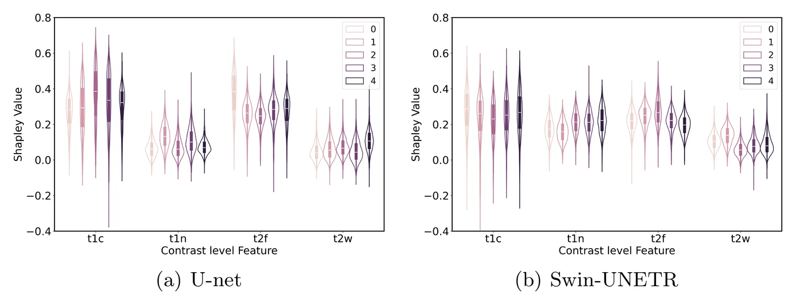
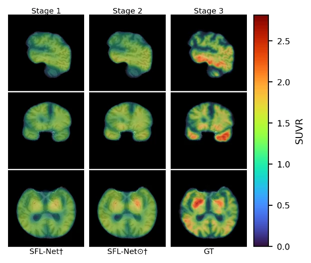

Research
Neuroimaging AI for subject-specific study of brain disease.
Next-generation neuroimaging AI tools
Clinically-aware lesion segmentation, and brain age from structural MRI.
Lesion segmentation
- Re-DiffiNet (MIDL 2024, oral): +0.55% Dice, −16.28% HD95 vs. an optimized U-Net (BraTS 2023, 5-fold CV).
- ISLES’24 (MICCAI 2024): 1st place with clinically informed CT preprocessing and nnU-Net; test Dice 28.5% vs. 26.3% for 2nd place.
- Low-resource settings: transfer learning for BraTS-Africa gliomas (Dice 0.72 vs. 0.65); CT-only stroke prediction.
![Qualitative infarct predictions for three ISLES’24 test scans, one per row (best, median and worst cases). The columns are non-contrast CT, relative Tmax and relative CBF perfusion maps, the ground-truth final infarct in red on a diffusion MRI slice, and the predictions of the top three teams: Kurtlab (#1), AMC-Axolotls (#2) and Ninjas (#3). In the top row all three teams roughly match the frontal infarct; in the middle row Kurtlab’s prediction covers more of the posterior infarct; in the bottom row the ground truth is two tiny dots and no team predicts a lesion.](assets/img/research/isles24-top3.webp)
Brain age
- ADC loss (ISBI 2026): counters the regression-to-the-mean bias of brain-age models.
- Preliminary: the brain-age gap in Alzheimer’s disease and MCI associates with cognition (MoCA, ADAS-Cog).
Trustworthy neuroimaging AI
Explanations that show why a segmentation model decides, and when to trust it.
Explaining segmentation
- Contrast-level Shapley values (XAI 2025): T1c and T2-FLAIR matter most, matching clinical reasoning.
- Agreement and uncertainty (ISBI 2026): ranking variance across folds goes with lower Dice (r −0.35 to −0.60).
- Frequentist uncertainty intervals (MIDL 2026): moderate agreement with clinical annotators (Kendall’s τ = 0.467, p = 0.015).

Responsible generative AI for clinical application
Future direction: “what if” views of an individual brain, and model explanations in plain language.
Forecasting brain-aging trajectories
- Counterfactual models: an individual brain under accelerated aging or early Alzheimer’s disease.
- SFL-Net (preprint): tau-PET from MRI; lowest PET error among capacity-matched models (MAE 0.104).

Natural-language explanations
- Goal: radiologist-style explanations, e.g. “hyperintense rim on T2-weighted MRI consistent with edema.”
- BTReport (MIDL 2026): tumor reports from 22 features; 21 are common in clinical reports, 11 predict survival.

Earlier work: fracture-healing biomechanics
M.S. and Ph.D. at Lehigh University with Prof. Hannah Dailey.
- Mechanoregulation models: torsional instability delayed healing ~15 days (wedge, complex) vs. ~1 week (simple).
- Radiodensity profilometry: cortex beside the callus lost 23% density in early healing (26 sheep).
- Virtual torsion tests correlated strongly with measured rigidity (R² ≥ 0.63).
Funding
- Explainable brain-age AI for older adults a2 Pilot Award $310,000 2025–2026 co-PI
- Equitable stroke-diagnosis AI Population Health Initiative $65,000 2025–2026 grant writing
- Glioblastoma segmentation, Sub-Saharan Africa Population Health Initiative $65,000 2023–2024 grant writing
- AI for brain lesion segmentation NSF I-Corps $50,000 2023–2024 tech lead